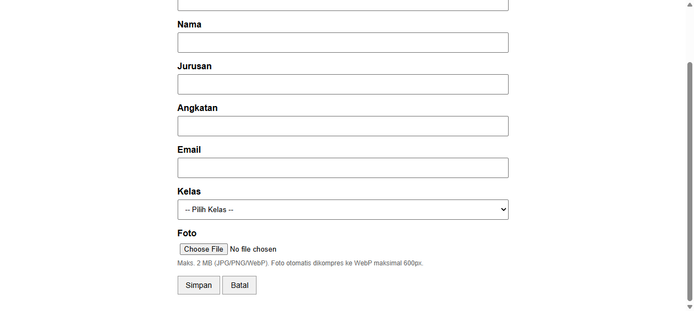
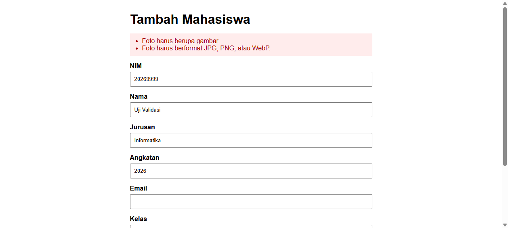
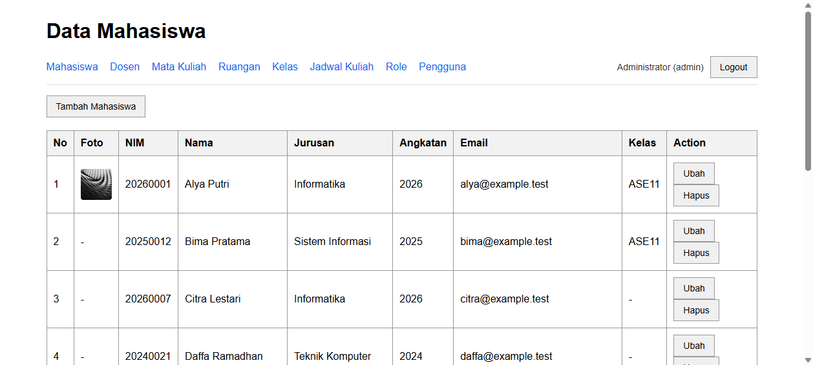
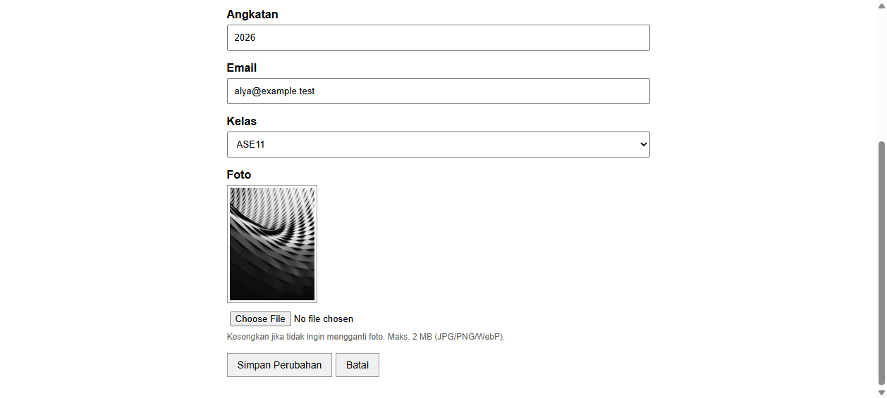

Modul ini menambahkan fitur upload foto pada CRUD mahasiswa yang sudah ada.
Foto disimpan di disk public, diresize, lalu dikonversi ke WebP agar hemat storage.
Database hanya menyimpan path file, bukan isi gambarnya.
Tujuan pembelajaran:
Prinsip yang dipakai tetap sama dengan modul sebelumnya: fokus pada fungsi, tampilan sederhana dan rapi,
tanpa framework CSS tambahan. Semua view tetap halaman HTML mandiri yang memakai CSS bersama
@include('partials.style').
Upload adalah proses memindahkan file dari komputer user ke server. File tidak disimpan di database; database hanya menyimpan alamat file. Isi file disimpan di storage.
enctype="multipart/form-data"
→ browser mengirim file
→ PHP menaruh file sementara
→ Laravel membungkusnya menjadi UploadedFile
→ validasi
→ resize + konversi WebP
→ Storage::disk('public')->put()
→ simpan path ke kolom foto
→ tampilkan lewat URL /storage/...
Ada dua hal yang sering tertukar:
| Istilah | Isi | Contoh |
|---|---|---|
| Path (disimpan di DB) | Lokasi relatif di dalam disk | mahasiswa/8f2c....webp |
| URL (dipakai di view) | Alamat yang bisa dibuka browser | http://127.0.0.1:8000/storage/mahasiswa/8f2c....webp |
db_ase11 aktif dan sudah di-migrate.php -m | findstr gd).admin@example.test / password.php artisan storage:link (dijelaskan di langkah 11).Jalankan di root proyek:
composer require intervention/image
Composer memilih intervention/image 3.11.10 karena versi 4.x mensyaratkan PHP ≥ 8.3,
sedangkan proyek ini memakai PHP 8.2. Dependency intervention/gif ikut terpasang.
Jika class belum dikenali setelah install, regenerasi autoloader:
composer dump-autoload --no-scripts
Perubahan pada composer.json hanya menambah satu baris di bagian require:
"require": {
"php": "^8.2",
"erusev/parsedown": "*",
"laravel/framework": "^12.0",
"laravel/tinker": "^2.10.1",
"spatie/laravel-permission": "*",
"intervention/image": "*"
},composer.lock juga berubah, tetapi isinya di-generate otomatis oleh Composer
(ribuan baris hash dependency), jadi tidak ditulis manual.
fotophp artisan make:migration add_foto_to_mahasiswa_table --table=mahasiswaFile baru: database/migrations/2026_10_23_174328_add_foto_to_mahasiswa_table.php
Source lengkap:
<?php
use Illuminate\Database\Migrations\Migration;
use Illuminate\Database\Schema\Blueprint;
use Illuminate\Support\Facades\Schema;
return new class extends Migration
{
/**
* Run the migrations.
*/
public function up(): void
{
Schema::table('mahasiswa', function (Blueprint $table) {
$table->string('foto')->nullable()->after('email');
});
}
/**
* Reverse the migrations.
*/
public function down(): void
{
Schema::table('mahasiswa', function (Blueprint $table) {
$table->dropColumn('foto');
});
}
};
nullable() dipakai karena foto bersifat opsional. Data mahasiswa lama tidak perlu diisi foto.
php artisan migrateOutput yang diharapkan:
INFO Running migrations.
2026_10_23_174328_add_foto_to_mahasiswa_table ........................ DONEVerifikasi:
php artisan migrate:statusFile baru: app/Services/ImageUploadService.php
Source lengkap:
<?php
namespace App\Services;
use Illuminate\Http\UploadedFile;
use Illuminate\Support\Facades\Storage;
use Illuminate\Support\Str;
use Intervention\Image\Drivers\Gd\Driver;
use Intervention\Image\ImageManager;
class ImageUploadService
{
/**
* Simpan gambar ke disk public sebagai WebP yang sudah diperkecil.
*
* @return string Path relatif terhadap disk public, mis. "mahasiswa/uuid.webp".
*/
public function store(UploadedFile $file, string $folder = 'mahasiswa', int $maxWidth = 600): string
{
$image = (new ImageManager(new Driver()))->read($file->getRealPath());
$image->scaleDown(width: $maxWidth);
$path = $folder.'/'.Str::uuid().'.webp';
Storage::disk('public')->put($path, $image->toWebp(75)->toString());
return $path;
}
public function delete(?string $path): void
{
if ($path) {
Storage::disk('public')->delete($path);
}
}
}Service ini sengaja dipisah dari controller agar logika upload bisa dipakai ulang oleh CRUD lain (misalnya Dosen atau Ruangan) tanpa menduplikasi kode.
MahasiswaFile: app/Models/Mahasiswa.php updated
Source lengkap setelah perubahan:
<?php
namespace App\Models;
use Illuminate\Database\Eloquent\Casts\Attribute;
use Illuminate\Database\Eloquent\Factories\HasFactory;
use Illuminate\Database\Eloquent\Model;
use Illuminate\Database\Eloquent\Relations\BelongsTo;
class Mahasiswa extends Model
{
use HasFactory;
protected $table = 'mahasiswa';
protected $fillable = [
'nim',
'nama',
'jurusan',
'email',
'angkatan',
'kelas_id',
'foto',
];
protected function casts(): array
{
return [
'angkatan' => 'integer',
];
}
protected function fotoUrl(): Attribute
{
return Attribute::get(
fn () => $this->foto ? asset('storage/'.$this->foto) : null
);
}
public function kelas(): BelongsTo
{
return $this->belongsTo(Kelas::class);
}
}
foto ditambahkan ke $fillable agar bisa diisi lewat create() dan update().
Accessor fotoUrl mengubah path menjadi URL siap pakai di view.
MahasiswaControllerFile: app/Http/Controllers/MahasiswaController.php updated
Source lengkap setelah perubahan:
<?php
namespace App\Http\Controllers;
use App\Models\Kelas;
use App\Models\Mahasiswa;
use App\Services\ImageUploadService;
use Illuminate\Http\RedirectResponse;
use Illuminate\Http\Request;
use Illuminate\Validation\Rule;
use Illuminate\View\View;
class MahasiswaController extends Controller
{
public function __construct(private ImageUploadService $imageUpload)
{
}
public function index(): View
{
$mahasiswa = Mahasiswa::with('kelas')
->orderBy('id')
->paginate(10)
->withQueryString();
return view('mahasiswa.index', compact('mahasiswa'));
}
public function create(): View
{
$kelas = Kelas::all();
return view('mahasiswa.create', compact('kelas'));
}
public function store(Request $request): RedirectResponse
{
$validated = $this->validateMahasiswa($request);
if ($request->hasFile('foto')) {
$validated['foto'] = $this->imageUpload->store($request->file('foto'));
}
Mahasiswa::create($validated);
return redirect()
->route('mahasiswa.index')
->with('success', 'Data mahasiswa berhasil ditambahkan.');
}
public function edit(Mahasiswa $mahasiswa): View
{
$kelas = Kelas::all();
return view('mahasiswa.edit', compact('mahasiswa', 'kelas'));
}
public function update(Request $request, Mahasiswa $mahasiswa): RedirectResponse
{
$validated = $this->validateMahasiswa($request, $mahasiswa);
$fotoLama = $mahasiswa->foto;
if ($request->hasFile('foto')) {
$validated['foto'] = $this->imageUpload->store($request->file('foto'));
}
$mahasiswa->update($validated);
if ($request->hasFile('foto')) {
$this->imageUpload->delete($fotoLama);
}
return redirect()
->route('mahasiswa.index')
->with('success', 'Data mahasiswa berhasil diubah.');
}
public function destroy(Mahasiswa $mahasiswa): RedirectResponse
{
$this->imageUpload->delete($mahasiswa->foto);
$mahasiswa->delete();
return redirect()
->route('mahasiswa.index')
->with('success', 'Data mahasiswa berhasil dihapus.');
}
private function validateMahasiswa(Request $request, ?Mahasiswa $mahasiswa = null): array
{
return $request->validate([
'nim' => [
'required',
'string',
'max:20',
Rule::unique('mahasiswa', 'nim')->ignore($mahasiswa),
],
'nama' => ['required', 'string', 'max:100'],
'jurusan' => ['required', 'string', 'max:100'],
'angkatan' => ['required', 'integer', 'min:1900', 'max:2200'],
'email' => ['nullable', 'email', 'max:100'],
'kelas_id' => ['nullable', 'exists:kelas,id'],
'foto' => ['nullable', 'image', 'mimes:jpg,jpeg,png,webp', 'max:2048'],
], [
'nim.required' => 'NIM wajib diisi.',
'nim.unique' => 'NIM sudah digunakan.',
'nama.required' => 'Nama wajib diisi.',
'jurusan.required' => 'Jurusan wajib diisi.',
'angkatan.required' => 'Angkatan wajib diisi.',
'kelas_id.exists' => 'Kelas yang dipilih tidak valid.',
'foto.image' => 'Foto harus berupa gambar.',
'foto.mimes' => 'Foto harus berformat JPG, PNG, atau WebP.',
'foto.max' => 'Ukuran foto maksimal 2 MB.',
]);
}
}File: resources/views/mahasiswa/create.blade.php updated
Source lengkap setelah perubahan:
<!DOCTYPE html>
<html lang="id">
<head>
<meta charset="UTF-8">
<meta name="viewport" content="width=device-width, initial-scale=1.0">
<title>Tambah Mahasiswa</title>
<style>
@include('partials.style')
body {
max-width: 600px;
}
</style>
</head>
<body>
<h1>Tambah Mahasiswa</h1>
@if ($errors->any())
<ul class="errors">
@foreach ($errors->all() as $error)
<li>{{ $error }}</li>
@endforeach
</ul>
@endif
<form action="{{ route('mahasiswa.store') }}" method="POST" enctype="multipart/form-data">
@csrf
<p>
<label for="nim">NIM</label><br>
<input type="text" id="nim" name="nim" value="{{ old('nim') }}" maxlength="20" required>
</p>
<p>
<label for="nama">Nama</label><br>
<input type="text" id="nama" name="nama" value="{{ old('nama') }}" maxlength="100" required>
</p>
<p>
<label for="jurusan">Jurusan</label><br>
<input type="text" id="jurusan" name="jurusan" value="{{ old('jurusan') }}" maxlength="100" required>
</p>
<p>
<label for="angkatan">Angkatan</label><br>
<input type="number" id="angkatan" name="angkatan" value="{{ old('angkatan') }}" min="1900" max="2200" required>
</p>
<p>
<label for="email">Email</label><br>
<input type="email" id="email" name="email" value="{{ old('email') }}" maxlength="100">
</p>
<p>
<label for="kelas_id">Kelas</label><br>
<select id="kelas_id" name="kelas_id">
<option value="">-- Pilih Kelas --</option>
@foreach ($kelas as $k)
<option value="{{ $k->id }}" {{ old('kelas_id') == $k->id ? 'selected' : '' }}>
{{ $k->nama_kelas }}
</option>
@endforeach
</select>
</p>
<p>
<label for="foto">Foto</label><br>
<input type="file" id="foto" name="foto" accept="image/jpeg,image/png,image/webp">
<span class="hint">Maks. 2 MB (JPG/PNG/WebP). Foto otomatis dikompres ke WebP maksimal 600px.</span>
</p>
<button type="submit">Simpan</button>
<a href="{{ route('mahasiswa.index') }}" class="btn">Batal</a>
</form>
</body>
</html>File: resources/views/mahasiswa/edit.blade.php updated
Source lengkap setelah perubahan:
<!DOCTYPE html>
<html lang="id">
<head>
<meta charset="UTF-8">
<meta name="viewport" content="width=device-width, initial-scale=1.0">
<title>Ubah Data Mahasiswa</title>
<style>
@include('partials.style')
body {
max-width: 600px;
}
</style>
</head>
<body>
<h1>Ubah Data Mahasiswa</h1>
@if ($errors->any())
<ul class="errors">
@foreach ($errors->all() as $error)
<li>{{ $error }}</li>
@endforeach
</ul>
@endif
<form action="{{ route('mahasiswa.update', $mahasiswa->id) }}" method="POST" enctype="multipart/form-data">
@csrf
@method('PUT')
<p>
<label for="nim">NIM</label><br>
<input type="text" id="nim" name="nim" value="{{ old('nim', $mahasiswa->nim) }}" maxlength="20" required>
</p>
<p>
<label for="nama">Nama</label><br>
<input type="text" id="nama" name="nama" value="{{ old('nama', $mahasiswa->nama) }}" maxlength="100" required>
</p>
<p>
<label for="jurusan">Jurusan</label><br>
<input type="text" id="jurusan" name="jurusan" value="{{ old('jurusan', $mahasiswa->jurusan) }}" maxlength="100" required>
</p>
<p>
<label for="angkatan">Angkatan</label><br>
<input type="number" id="angkatan" name="angkatan" value="{{ old('angkatan', $mahasiswa->angkatan) }}" min="1900" max="2200" required>
</p>
<p>
<label for="email">Email</label><br>
<input type="email" id="email" name="email" value="{{ old('email', $mahasiswa->email) }}" maxlength="100">
</p>
<p>
<label for="kelas_id">Kelas</label><br>
<select id="kelas_id" name="kelas_id">
<option value="">-- Pilih Kelas --</option>
@foreach ($kelas as $k)
<option value="{{ $k->id }}" {{ old('kelas_id', $mahasiswa->kelas_id) == $k->id ? 'selected' : '' }}>
{{ $k->nama_kelas }}
</option>
@endforeach
</select>
</p>
<p>
<label for="foto">Foto</label><br>
@if ($mahasiswa->foto)
<img src="{{ $mahasiswa->foto_url }}" alt="Foto {{ $mahasiswa->nama }}" class="foto-preview">
@endif
<input type="file" id="foto" name="foto" accept="image/jpeg,image/png,image/webp">
<span class="hint">Kosongkan jika tidak ingin mengganti foto. Maks. 2 MB (JPG/PNG/WebP).</span>
</p>
<button type="submit">Simpan Perubahan</button>
<a href="{{ route('mahasiswa.index') }}" class="btn">Batal</a>
</form>
</body>
</html>File: resources/views/mahasiswa/index.blade.php updated
Source lengkap setelah perubahan:
<!DOCTYPE html>
<html lang="id">
<head>
<meta charset="UTF-8">
<meta name="viewport" content="width=device-width, initial-scale=1.0">
<title>Data Mahasiswa</title>
<style>
@include('partials.style')
</style>
</head>
<body>
<h1>Data Mahasiswa</h1>
@if (session('success'))
<p class="success">{{ session('success') }}</p>
@endif
@include('partials.nav')
@role('admin')
<p>
<a href="{{ route('mahasiswa.create') }}" class="btn">Tambah Mahasiswa</a>
</p>
@endrole
<table>
<thead>
<tr>
<th>No</th>
<th>Foto</th>
<th>NIM</th>
<th>Nama</th>
<th>Jurusan</th>
<th>Angkatan</th>
<th>Email</th>
<th>Kelas</th>
<th>Action</th>
</tr>
</thead>
<tbody>
@forelse ($mahasiswa as $mhs)
<tr>
<td>{{ $mahasiswa->firstItem() + $loop->index }}</td>
<td>
@if ($mhs->foto)
<img src="{{ $mhs->foto_url }}" alt="Foto {{ $mhs->nama }}" class="foto-thumb">
@else
-
@endif
</td>
<td>{{ $mhs->nim }}</td>
<td>{{ $mhs->nama }}</td>
<td>{{ $mhs->jurusan }}</td>
<td>{{ $mhs->angkatan }}</td>
<td>{{ $mhs->email }}</td>
<td>{{ $mhs->kelas->nama_kelas ?? '-' }}</td>
<td>
@role('admin')
<a href="{{ route('mahasiswa.edit', $mhs->id) }}" class="btn">Ubah</a>
<form
action="{{ route('mahasiswa.destroy', $mhs->id) }}"
method="POST"
style="display: inline"
onsubmit="return confirm('Yakin ingin menghapus data mahasiswa ini?')"
>
@csrf
@method('DELETE')
<button type="submit">Hapus</button>
</form>
@else
<span>-</span>
@endrole
</td>
</tr>
@empty
<tr>
<td colspan="9">Belum ada data mahasiswa.</td>
</tr>
@endforelse
</tbody>
</table>
{{ $mahasiswa->links('pagination.custom') }}
</body>
</html>File: resources/views/partials/style.blade.php updated
Source lengkap setelah perubahan:
body {
font-family: Arial, sans-serif;
max-width: 1100px;
margin: 30px auto;
padding: 0 20px;
}
h1 {
margin-bottom: 10px;
}
a {
color: #155eef;
}
table {
width: 100%;
border-collapse: collapse;
margin-top: 20px;
}
th,
td {
border: 1px solid #999;
padding: 10px;
text-align: left;
}
th {
background-color: #f2f2f2;
}
.success {
padding: 10px;
background-color: #e8f7e8;
color: #176b17;
}
form {
display: inline;
}
label {
display: inline-block;
margin-bottom: 5px;
font-weight: bold;
}
input,
select {
width: 100%;
box-sizing: border-box;
padding: 9px;
}
input[type="checkbox"] {
width: auto;
padding: 0;
margin-right: 6px;
}
input[type="file"] {
width: auto;
padding: 4px;
}
button,
.btn {
padding: 8px 14px;
background-color: #f0f0f0;
border: 1px solid #999;
cursor: pointer;
font-family: Arial, sans-serif;
font-size: 14px;
color: #000;
text-decoration: none;
display: inline-block;
}
button:hover,
.btn:hover {
background-color: #e0e0e0;
}
.errors {
padding: 10px 10px 10px 30px;
background-color: #ffecec;
color: #a40000;
}
/* Navigasi utama */
.main-nav {
display: flex;
flex-wrap: wrap;
align-items: center;
justify-content: space-between;
gap: 10px;
padding: 10px 0;
border-bottom: 1px solid #ddd;
margin-bottom: 16px;
}
.nav-links a {
margin-right: 14px;
text-decoration: none;
}
.nav-links a:hover {
text-decoration: underline;
}
.nav-user {
display: flex;
align-items: center;
gap: 10px;
}
.user-info {
font-size: 14px;
color: #333;
}
/* Pagination sederhana */
.pagination {
display: flex;
list-style: none;
padding: 0;
margin: 20px 0 0;
gap: 6px;
flex-wrap: wrap;
}
.pagination li span,
.pagination li a {
display: inline-block;
padding: 6px 12px;
border: 1px solid #999;
text-decoration: none;
color: #000;
background-color: #f0f0f0;
}
.pagination li a:hover {
background-color: #e0e0e0;
}
.pagination li.active span {
background-color: #155eef;
border-color: #155eef;
color: #fff;
font-weight: bold;
}
.pagination li.disabled span {
color: #999;
background-color: #f7f7f7;
cursor: not-allowed;
}
/* Foto upload */
.foto-thumb {
display: block;
width: 48px;
height: 48px;
object-fit: cover;
border-radius: 4px;
}
.foto-preview {
display: block;
max-width: 120px;
margin-bottom: 8px;
padding: 3px;
border: 1px solid #999;
}
.hint {
display: block;
margin-top: 4px;
font-size: 12px;
color: #666;
}
Aturan lama tidak diubah. Yang ditambahkan adalah input[type="file"],
.foto-thumb, .foto-preview, dan .hint.
php artisan storage:linkOutput:
INFO The [public/storage] link has been connected to [storage/app/public]./storage/mahasiswa/xxx.webp akan menghasilkan 404
meskipun file-nya benar-benar ada di storage/app/public.
php artisan optimize:clear
php artisan route:list --path=mahasiswa -v
Pastikan store, update, dan destroy masih dijaga
auth, permission:menu-mahasiswa, dan role:admin.
Upload tidak boleh membuka akses baru bagi role non-admin.
php artisan serve --host=127.0.0.1 --port=8000Login sebagai admin, lalu uji skenario di bagian Cara Uji.
enctype="multipart/form-data" wajib?
Form biasa mengirim data sebagai application/x-www-form-urlencoded (teks).
File biner tidak bisa dikirim dengan cara itu. Dengan multipart/form-data,
browser membagi request menjadi beberapa bagian (field teks + file) sehingga file sampai utuh.
Kalau atribut ini lupa, $request->hasFile('foto') akan selalu false.
nullable + image + mimes + max?| Rule | Fungsi |
|---|---|
nullable | Foto boleh kosong. Mahasiswa lama dan form edit tanpa ganti foto tetap valid. |
image | Memastikan isi file benar-benar gambar, bukan hanya ekstensi yang diganti. |
mimes:jpg,jpeg,png,webp | Membatasi format yang diterima. SVG sengaja tidak diizinkan karena bisa berisi JavaScript. |
max:2048 | Batas 2048 KB = 2 MB. Satuan rule ini kilobyte, bukan byte. |
Validasi ditempatkan di method validateMahasiswa() agar aturan yang sama dipakai
oleh store() dan update(), termasuk pengecualian unique NIM saat edit.
hasFile()?
$request->file('foto') bisa bernilai null kalau user tidak memilih file.
hasFile() memastikan file benar-benar ada dan upload-nya sukses sebelum service dipanggil.
Ini juga yang membuat form edit bisa mempertahankan foto lama.
scaleDown() lalu toWebp(75)?scaleDown(width: 600) memperkecil gambar secara proporsional sampai lebar maksimal 600px. Gambar yang lebih kecil tidak diperbesar, jadi tidak kehilangan kualitas.toWebp(75) mengubah format ke WebP dengan kualitas 75. WebP umumnya jauh lebih kecil dari JPG/PNG pada kualitas visual yang setara.toString() mengambil isi biner hasil encode untuk disimpan lewat Storage::put().
Nama asli dari user tidak aman dan bisa bentrok. Str::uuid() menghasilkan nama unik
seperti 8f2c1a7e-....webp, sehingga dua user yang mengupload foto.jpg
tidak saling menimpa, dan nama asli tidak bocor ke publik.
Path bersifat portabel. Kalau nanti pindah dari disk lokal ke S3 atau CDN, isi database tidak perlu diubah; cukup ubah cara membentuk URL di accessor. URL lengkap juga bergantung pada domain/port yang bisa berubah.
asset('storage/...')?
Storage::disk('public')->url() membentuk URL dari APP_URL di .env.
Kalau APP_URL tidak sama dengan alamat yang sedang dibuka (misalnya aplikasi dijalankan di
127.0.0.1:8000 tetapi APP_URL=http://localhost), gambar akan menunjuk ke host yang salah
dan gagal dimuat. asset() mengikuti alamat request, sehingga lebih aman untuk pengembangan
dengan php artisan serve.
$fotoLama = $mahasiswa->foto;
if ($request->hasFile('foto')) {
$validated['foto'] = $this->imageUpload->store($request->file('foto'));
}
$mahasiswa->update($validated);
if ($request->hasFile('foto')) {
$this->imageUpload->delete($fotoLama);
}Urutannya: simpan file baru → update database → hapus file lama. Kalau file lama dihapus lebih dulu lalu update database gagal, data akan menunjuk file yang sudah tidak ada. Dengan urutan ini, kegagalan update tidak merusak file lama.
destroy()?Tanpa penghapusan, file akan menumpuk di storage meskipun baris database sudah hilang. File seperti ini disebut orphan file. Menghapus file lebih dulu, lalu baris database, membuat data tidak pernah menunjuk file yang sudah hilang.


.txt dengan pesan berbahasa Indonesia.

Pengujian dengan foto berukuran 1200 × 1600 px:
| Ukuran | File asli (JPG) | Hasil (WebP) |
|---|---|---|
| Dimensi | 1200 × 1600 px | 600 × 800 px |
| Ukuran file | 225.106 byte (±220 KB) | 39.316 byte (±38 KB) |
| Penghematan | ±82,5% | |
Pada percobaan gambar gradien sederhana, hasilnya 68.207 byte → 3.442 byte (±95%). Angka persisnya bergantung pada isi gambar, tetapi resize + WebP konsisten memotong ukuran secara signifikan.
Verifikasi file di server:
dir storage\app\public\mahasiswa24/10/2026 05:55 39.316 8f2c1a7e-....webp| No | File | Keterangan |
|---|---|---|
| 1 | database/migrations/2026_10_23_174328_add_foto_to_mahasiswa_table.php | Menambah kolom foto nullable pada tabel mahasiswa. |
| 2 | app/Services/ImageUploadService.php | Resize, konversi WebP, simpan, dan hapus file. |
| 3 | libraryupload.md | Materi teori upload (CRUD yang cocok, library, validasi, proses, optimasi). |
| 4 | MODUL_UPLOAD.html | Modul kuliah ini. |
| 5 | screenshots/upload-create-form.png | Screenshot form tambah dengan input foto. |
| 6 | screenshots/upload-validation.png | Screenshot validasi file bukan gambar. |
| 7 | screenshots/upload-index.png | Screenshot tabel dengan thumbnail foto. |
| 8 | screenshots/upload-edit.png | Screenshot form edit dengan preview foto lama. |
| No | File | Perubahan |
|---|---|---|
| 1 | app/Models/Mahasiswa.php | foto masuk $fillable; accessor fotoUrl. |
| 2 | app/Http/Controllers/MahasiswaController.php | Inject service, validasi foto, simpan/ganti/hapus file. |
| 3 | resources/views/mahasiswa/create.blade.php | enctype + input file + hint. |
| 4 | resources/views/mahasiswa/edit.blade.php | enctype + input file + preview foto lama. |
| 5 | resources/views/mahasiswa/index.blade.php | Kolom Foto + thumbnail; colspan empty-state 8 → 9. |
| 6 | resources/views/partials/style.blade.php | CSS .foto-thumb, .foto-preview, .hint, file input. |
| 7 | composer.json | Menambah intervention/image. |
| 8 | composer.lock | Lockfile hasil composer require (generated). |
| 9 | catatan.md | Bagian baru: perintah fitur upload + tabel ringkasan. |
public/storage juga dibuat, tetapi tidak masuk daftar file karena merupakan
symbolic link (dan diabaikan Git lewat /public/storage pada .gitignore).
File upload di storage/app/public/mahasiswa/ juga tidak di-commit.
| No | Perintah | Fungsi |
|---|---|---|
| 1 | composer require intervention/image | Install library pengolah gambar. |
| 2 | composer dump-autoload --no-scripts | Perbarui autoloader Composer. |
| 3 | php artisan make:migration add_foto_to_mahasiswa_table --table=mahasiswa | Buat migration kolom foto. |
| 4 | php artisan migrate | Jalankan migration. |
| 5 | php artisan storage:link | Buat symlink public/storage. |
| 6 | php artisan optimize:clear | Bersihkan cache config/route/view. |
| 7 | php artisan route:list --path=mahasiswa -v | Verifikasi route dan middleware. |
| 8 | php artisan serve --host=127.0.0.1 --port=8000 | Jalankan server untuk pengujian. |
| 9 | php artisan test | Test regresi (2 test lulus). |
php artisan serve --host=127.0.0.1 --port=8000.http://127.0.0.1:8000/login, masuk dengan admin@example.test / password..txt.
Harus muncul dua pesan: “Foto harus berupa gambar.” dan
“Foto harus berformat JPG, PNG, atau WebP.”storage/app/public/mahasiswa: hanya file baru yang tersisa.mahasiswa tidak bisa membuka
/mahasiswa/create (403) dan tidak melihat tombol Ubah/Hapus.Verifikasi cepat lewat terminal:
dir storage\app\public\mahasiswa
php artisan migrate:status
php artisan route:list --path=mahasiswa -vKerjakan di proyek masing-masing. Manfaatkan pola yang sudah ada: migration → model → service → controller → view → uji. Kumpulkan source code, screenshot, dan catatan perintah.
Tambahkan fitur upload foto pada CRUD Dosen.
add_foto_to_dosen_table dengan kolom foto nullable.foto ke $fillable model Dosen dan buat accessor fotoUrl.ImageUploadService yang sudah ada (jangan menduplikasi logika resize/WebP).enctype="multipart/form-data"; form edit menampilkan preview.Penilaian: migration 5, model 5, validasi 5, create 5, edit 5, index 5, hapus file 5, screenshot 5.
Tambahkan kolom modul pada CRUD Mata Kuliah untuk file PDF.
modul nullable (string, simpan path).nullable|file|mimes:pdf|max:5120 (maksimal 5 MB).storage/app/public/modul dengan nama UUID + .pdf.Penilaian: migration 5, validasi 5, proses simpan 10, link unduh 5, hapus file 5.
Buat fitur upload banyak file untuk satu jadwal.
lampiran_jadwal: id, jadwal_kuliah_id (cascadeOnDelete), path, nama_asli, timestamps.JadwalKuliah hasMany LampiranJadwal.lampiran[] (multiple) dan memvalidasi setiap file.Penilaian: struktur tabel 5, relasi 5, proses upload multiple 5, tampilan 3, hapus massal 2.
Selain foto 600px, buat thumbnail 150px. Bandingkan ukuran file dan tuliskan kesimpulan singkat (tabel sebelum/sesudah). Jelaskan kapan sebaiknya memakai satu versi saja.
Penilaian: implementasi 6, analisis ukuran 4.
| Aspek | Bobot | Indikator |
|---|---|---|
| Kebenaran fungsi | 40% | Upload, tampil, ganti, dan hapus berjalan tanpa error. |
| Validasi & keamanan | 25% | File salah ditolak; nama file acak; ukuran dibatasi. |
| Efisiensi storage | 20% | Resize/konversi diterapkan; file lama tidak menumpuk. |
| Kerapian kode | 10% | Service dipakai ulang; tidak ada duplikasi logika. |
| Dokumentasi | 5% | Screenshot, catatan perintah, dan penjelasan singkat. |
storage/app/public/... setiap kali selesai menguji.